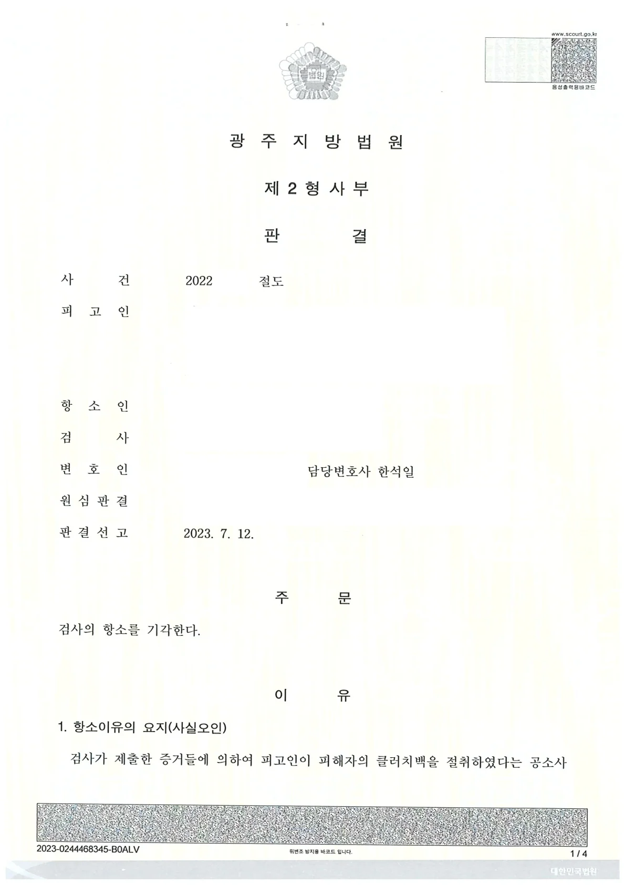
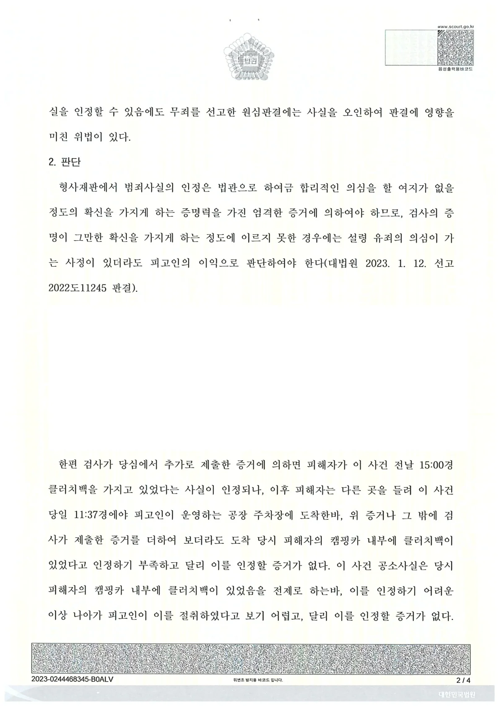

단편적인 정황 증거만으로 기소된 절도 사건을 1심부터 조력하여 무죄를 이끌어내고, 직접 변론한 2심에서 검사의 항소마저 기각시키며 의뢰인의 억울함을 끝까지 덜어드렸습니다.
최근 CCTV 등 단편적인 정황 증거만으로 억울하게 재산범죄 피의자로 몰리는 사례가 적지 않습니다. 특히 1심에서 다투어 무죄를 받았음에도 검사가 이에 불복하여 항소할 경우, 피고인이 겪는 심리적 압박과 고통은 이루 말할 수 없습니다.
이번에 소개해 드릴 사례는 불충분한 정황 증거로 절도범 누명을 쓴 의뢰인을 위해, 객관적인 사실관계를 하나하나 되짚어 검사의 항소를 기각시키고 무죄를 지켜낸 사례입니다.
1. 사건의 배경: 정황 증거로 인한 기소, 그리고 검사의 항소
본 사건은 피해자가 자신의 캠핑카 안에서 클러치백을 분실했다고 주장하면서 시작되었습니다. 검사는 의뢰인이 공소사실 일시경 주차장에서 '검은색 물체'를 들고 공장 안으로 들어온 CCTV 영상 등을 근거로 의뢰인을 기소했습니다.
1심에서부터 의뢰인의 억울함을 소명한 끝에 다행히 무죄가 선고되었으나, 검사는 의뢰인이 절취한 사실을 인정할 수 있음에도 무죄를 선고한 원심판결에 사실오인의 위법이 있다며 곧바로 항소했습니다. 수사기관이 확신을 가지고 2심까지 재판을 이어가는 상황은 일반인인 의뢰인이 홀로 감당하기에는 버거운 조건이었습니다.
2. 변호사의 대응: 기록 속 '합리적 의심'을 제기하다
형사재판에서 범죄사실의 인정은 법관으로 하여금 합리적인 의심을 할 여지가 없을 정도의 엄격한 증거에 의하여야 합니다. 저는 이 원칙에 입각하여, 1심부터 살펴보았던 기록과 검사가 항소심에서 추가로 제출한 증거들을 다시금 꼼꼼하게 살폈습니다.
물체의 동일성 의문 제기: 우선, 영상 속 의뢰인이 들고 있던 '검은색 물체'가 피해자 소유의 클러치백이라고 단정하기 어렵다는 점을 객관적으로 짚었습니다
피해자 동선의 사실관계 확인: 검사가 항소심에서 추가로 제출한 증거를 살펴본 결과, 피해자가 사건 전날 15:00경 클러치백을 가지고 있었던 것은 사실이나, 이후 다른 곳들을 들렀다가 사건 당일 11:37경에야 주차장에 도착했다는 사실을 확인했습니다.
상황의 재구성: 피해자가 다른 곳을 방문한 사실이 확인된 이상, 주차장에 도착했을 당시 피해자의 캠핑카 내부에 애초부터 클러치백이 있었다고 단정하기 부족하다는 점을 재판부에 차분히 설명하고 입증하는 데 주력했습니다.
3. 결과: 검사의 항소 기각, '무죄' 최종 유지
재판부 역시 이러한 변론에 귀 기울여 주셨습니다. 재판부는 피해자의 캠핑카 내부에 클러치백이 있었음을 인정하기 어려운 이상, 의뢰인이 이를 절취하였다고 보기 어렵다고 판단했습니다.
※ 구체적인 사건은 사실관계에 따라 달라질 수 있습니다.
 한석일 대표변호사
한석일 대표변호사